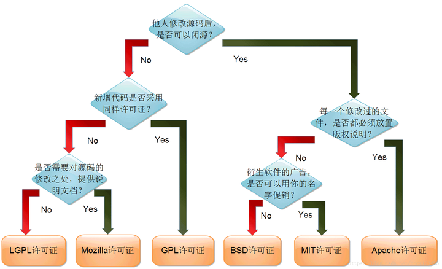

Build System
• Clang 5.0 • Apple Clang 10.0 • GCC 7.4 • Visual Studio 2019 16.8
Toolchain 包括: gcc, libc库, linux内核头文件, binutils, 其他构建打包工具(m4,gmp,mpc)
• 方式1：从0开始制作 make toolchain
• 方式2：外部
[GCC] https://wiki.ubuntu.com/ToolChain#GCC
[Binutils] https://wiki.ubuntu.com/ToolChain#Binutils
[Glibc] https://wiki.ubuntu.com/ToolChain#Glibc
[kernel] https://wiki.ubuntu.com/ToolChain#kernel_headers_for_user_space_packages

编译工具 GCC 和 CMake
======= ubuntu 安装
apt install build-essential
apt install cmake ninja-build
======= RHEL 安装
sudo dnf groupinstall 'Development Tools'
sudo dnf install make
sudo dnf install cmake ninja-build
======== 使用方式 gcc hello.c -o hello
#include <stdio.h>
int main() {
printf("hello world\n");
return 0;
}
========= 使用方式 CMakeLists.txt
mkdir build && cd build
cmake -G Ninja ..
ninja
或cmake --build .
GCC Source
gcc_version=7.4.0
% wget https://ftp.gnu.org/gnu/gcc/gcc-${gcc_version}/gcc-${gcc_version}.tar.bz2
% wget https://ftp.gnu.org/gnu/gcc/gcc-${gcc_version}/gcc-${gcc_version}.tar.bz2.sig
% wget https://ftp.gnu.org/gnu/gnu-keyring.gpg
% signature_invalid=`gpg --verify --no-default-keyring --keyring ./gnu-keyring.gpg gcc-${gcc_version}.tar.bz2.sig`
% if [ $signature_invalid ]; then echo "Invalid signature" ; exit 1 ; fi
% tar -xvjf gcc-${gcc_version}.tar.bz2
% cd gcc-${gcc_version}
% ./contrib/download_prerequisites
% cd ..
% mkdir gcc-${gcc_version}-build
% cd gcc-${gcc_version}-build
% $PWD/../gcc-${gcc_version}/configure --prefix=$HOME/toolchains --enable-languages=c,c++
% make -j$(nproc)
% make install
GCC
mkdir build
% cd build
% CC=$HOME/toolchains/bin/gcc CXX=$HOME/toolchains/bin/g++ \
cmake .. -DCMAKE_CXX_LINK_FLAGS="-Wl,-rpath,$HOME/toolchains/lib64 -L$HOME/toolchains/lib64"
CMake Source
sudo apt-get install libssl-dev
# https://github.com/Kitware/CMake/releases/download/v3.19.0-rc3/
tar -zxvf cmake-3.19.0-rc3.tar.gz
cd cmake-3.19.0-rc3
./bootstrap --prefix=/opt/cmake
make all install
编译工具 Clang (LLVM)
LLVM是一个包括了很多模块的编译器框架。
-
clang是LLVM的前端: 用于编译C、C++和Objective-C等语言, 输出中间代码LLVM IR，再交给后端生成本机代码
-
lldb 是一个开源的调试器
-
clangd是一个基于Clang编译器的语言服务器: 用于提供C/C++语言的代码补全、语义分析和代码导航等功能
======= ubuntu22 安装
sudo apt install clang
root@ubuntu22:~# /usr/bin/clang --version
root@ubuntu22:~# /usr/bin/clang-14 --version
Ubuntu clang version 14.0.0-1ubuntu1.1
Target: x86_64-pc-linux-gnu
Thread model: posix
InstalledDir: /usr/bin
======== 官方仓库 (可以指定版本)
wget https://apt.llvm.org/llvm.sh
sudo ./llvm.sh 17 ## 格式 sudo ./llvm.sh <版本号>
软件源
deb http://apt.llvm.org/jammy/ llvm-toolchain-jammy-18 main
deb-src http://apt.llvm.org/jammy/ llvm-toolchain-jammy-18 main
会安装这几个软件
apt install clang-18 lldb-18 lld-18 clangd-18
root@ubuntu22:~# /usr/bin/clang-18 --version
Ubuntu clang version 18.1.8 (++20240731024944+3b5b5c1ec4a3-1~exp1~20240731145000.144)
Target: x86_64-pc-linux-gnu
Thread model: posix
InstalledDir: /usr/bin
======== 使用方式 clang hello.c -o hello
#include <stdio.h>
int main() {
printf("hello world\n");
return 0;
}
Source
# https://lldb.llvm.org/resources/build.html
# https://llvm.org/docs/GettingStarted.html#getting-started-with-llvm
# https://llvm.org/docs/CMake.html
yum install libedit-devel libxml2-devel ncurses-devel python-devel swig
https://github.com/llvm/llvm-project.git
https://mirrors.tuna.tsinghua.edu.cn/git/llvm-project.git
============== 方法1，没有bin/clang
cd llvm-project
cmake -S llvm -B build -G Ninja -DCMAKE_BUILD_TYPE=Release
cd build
ninja
或 ninja -C build check-llvm
============ 方法2, 有bin/clang
cd $HOME/build
$ cmake -G Ninja -DLLVM_ENABLE_PROJECTS="clang;lldb" [<cmake options>] path/to/llvm-project/llvm
cmake -G Ninja -DLLVM_ENABLE_PROJECTS="clang;lldb" \
-DCMAKE_BUILD_TYPE=Release \
-DCMAKE_INSTALL_PREFIX=/install/path \
$HOME/llvm-project/llvm
Document
$ sudo apt-get install doxygen graphviz swig
$ pip3 install -r /path/to/llvm-project/llvm/docs/requirements.txt
$ ninja docs-lldb-html
$ ninja docs-lldb-man
$ ninja lldb-cpp-doc
OpenWrt toolchain
export FORCE_UNSAFE_CONFIGURE=1
$ ./scripts/feeds update -a ; ./scripts/feeds install -a
$ make menuconfig
开启 Advanced Config Options
开启 Use External Toolchain
选择 Use hosts toolchain
======
最后的 .config 选项
CONFIG_EXTERNAL_TOOLCHAIN=y
CONFIG_NATIVE_TOOLCHAIN=y
CONFIG_USE_EXTERNAL_LIBC=y
内部工具链, 外部工具链 External
staging_dir/toolchain-i386_pentium4_gcc-13.3.0_musl
默认编译 openwrt 时会先编译一套 toolchain. 这个步骤耗时较长
make[2] toolchain/compile
make[3] -C toolchain/binutils compile
make[3] -C toolchain/fortify-headers compile
make[3] -C toolchain/gdb compile
make[3] -C toolchain/nasm compile
make[3] -C toolchain/gcc/initial compile
make[3] -C toolchain/kernel-headers compile
make[3] -C toolchain/musl compile
make[3] -C toolchain/gcc/final compile
make[2] target/compile
script/ext-tools.sh
script/ext-toolchain.sh
=====
工具链通常有一个固定的前缀 gcc --print-multiarch; gcc -dumpmachine
{x86_64-linux-gnu}-gcc-11
{x86_64-redhat-linux}-gcc
{x86_64-alpine-linux-musl}-gcc
{arm-openwrt-linux-uclibcgnueabi}-gcc
{arm-openwrt-linux-uclibcgnueabi}-ar
{arm-openwrt-linux-uclibcgnueabi}-gdb
=====
使用外部 toolchain 可以多个 project 共用一套 toolchain , 而且也不重再编译它了. 省时省力
可以使用已经很成熟的已有工具链
$ scripts/ext-toolchain.sh --toolchain /usr --print-libc
glibc
$ scripts/ext-toolchain.sh --toolchain /usr --print-target
x86_64-linux-gnu
$ scripts/ext-toolchain.sh --toolchain /usr --test threads && echo OK || echo NOT OK
OK
$ scripts/ext-toolchain.sh --toolchain /usr --test c++ && echo OK || echo NOT OK
NOT OK
没用，不要覆盖到make defconfig
$ ./scripts/ext-toolchain.sh --toolchain /usr --config x86/64
CONFIG_TARGET_x86=y
CONFIG_TARGET_x86_64=y
CONFIG_SOFT_FLOAT=y
CONFIG_IPV6=y
这些应该有用
CONFIG_BUILD_NLS=y
CONFIG_DEVEL=y
CONFIG_EXTERNAL_TOOLCHAIN=y
CONFIG_TOOLCHAIN_ROOT="/usr"
CONFIG_TOOLCHAIN_PREFIX="c89-"
CONFIG_TARGET_NAME="x86_64-linux-gnu"
CONFIG_EXTERNAL_TOOLCHAIN_LIBC_USE_GLIBC=y
OpenWrt external toolchain 报错
ubuntu, fedora
make[3] diffconfig buildversion feedsversion
make[2]: *** No rule to make target 'package/system/opkg/host/compile', needed by 'package/compile'. Stop.
make[2]: Leaving directory '/root/h1'
make[1]: *** [package/Makefile:173: /root/h1/staging_dir/target-i386_pentium4_musl/stamp/.package_compile] Error 2
make[1]: *** Waiting for unfinished jobs....
make[4] scripts/config/conf
make[2]: Leaving directory '/root/h1'
make[1]: Leaving directory '/root/h1'
make: *** [/root/h1/include/toplevel.mk:233: world] Error 2
Testing external toolchain for ipv6 support ... Toolchain directory '--cflags' does not exist.
failed
ERROR: CONFIG_IPV6 is enabled but the external toolchain does not support it
make[3]: *** [Makefile:76: /openwrt/build_dir/toolchain-x86_64-linux-gnu/wrapper-1/.prepared] Error 1
make[3]: Leaving directory '/openwrt/toolchain/wrapper'
time: toolchain/wrapper/compile#0.02#0.03#0.06
ERROR: toolchain/wrapper failed to build.
make[2]: *** [toolchain/Makefile:93: toolchain/wrapper/compile] Error 1
make[2]: Leaving directory '/openwrt'
make[1]: *** [toolchain/Makefile:89: /openwrt/staging_dir/toolchain-x86_64-linux-gnu/stamp/.toolchain_compile] Error 2
make[1]: Leaving directory '/openwrt'
make: *** [/openwrt/include/toplevel.mk:233: world] Error 2
alpine 修改tools/cmake/Makefile编译完成， tools/findutils报错
ninja: Entering directory `/root/wrt/build_dir/host/cmake-3.30.5'
[209/856] Building C object Utilities/cmlibarchive/libarchive/CMakeFiles/cmlibarchive.dir/archive_random.c.o
FAILED: Utilities/cmlibarchive/libarchive/CMakeFiles/cmlibarchive.dir/archive_random.c.o
/root/wrt/staging_dir/host/bin/gcc -DHAVE_CONFIG_H -D_BSD_SOURCE -D_DEFAULT_SOURCE -D_XOPEN_SOURCE=600 -I/root/wrt/build_dir/host/cmake-3.30.5/Utilities/cmlibarchive/libarchive -I/root/wrt/build_dir/host/cmake-3.30.5/Utilities/cmlibarchive -I/root/wrt/build_dir/host/cmake-3.30.5/Utilities/cmbzip2 -isystem /root/wrt/build_dir/host/cmake-3.30.5/Utilities/std -isystem /root/wrt/build_dir/host/cmake-3.30.5/Utilities -O2 -I/root/wrt/staging_dir/host/include -w -O3 -DNDEBUG -std=gnu11 -MD -MT Utilities/cmlibarchive/libarchive/CMakeFiles/cmlibarchive.dir/archive_random.c.o -MF Utilities/cmlibarchive/libarchive/CMakeFiles/cmlibarchive.dir/archive_random.c.o.d -o Utilities/cmlibarchive/libarchive/CMakeFiles/cmlibarchive.dir/archive_random.c.o -c /root/wrt/build_dir/host/cmake-3.30.5/Utilities/cmlibarchive/libarchive/archive_random.c
/root/wrt/build_dir/host/cmake-3.30.5/Utilities/cmlibarchive/libarchive/archive_random.c: In function 'archive_random':
/root/wrt/build_dir/host/cmake-3.30.5/Utilities/cmlibarchive/libarchive/archive_random.c:125:9: error: implicit declaration of function 'arc4random_buf' [-Wimplicit-function-declaration]
125 | arc4random_buf(buf, nbytes);
| ^~~~~~~~~~~~~~
ninja: build stopped: subcommand failed.
make[3]: *** [Makefile:59: /root/wrt/build_dir/host/cmake-3.30.5/.built] Error 1
make[3]: Leaving directory '/root/wrt/tools/cmake'
time: tools/cmake/compile#23.13#5.39#28.75
ERROR: tools/cmake failed to build.
make[2]: *** [tools/Makefile:231: tools/cmake/compile] Error 1
make[2]: Leaving directory '/root/wrt'
make[1]: *** [tools/Makefile:227: /root/wrt/staging_dir/host/stamp/.tools_compile_nyyynyynnnyyynynyyyyyyynynynynyynnynnyyyyyynnnyyyyyyyyynynnyyyyynyyy] Error 2
make[1]: Leaving directory '/root/wrt'
make: *** [/root/wrt/include/toplevel.mk:233: world] Error 2
About Links
https://openwrt.org/docs/guide-developer/toolchain/install-buildsystem
https://wiki.alpinelinux.org/wiki/How_to_setup_a_Alpine_Linux_mirror